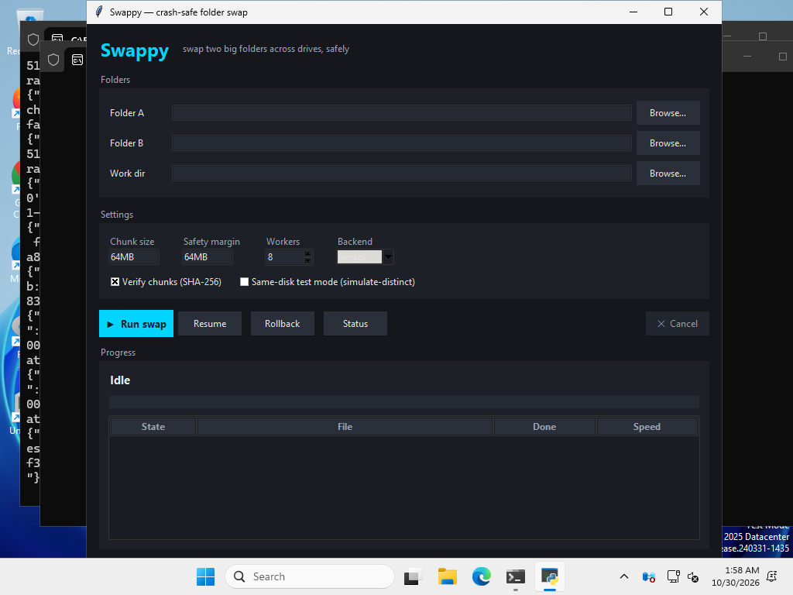

Swappy
This swaps two big folders across two drives, even when neither drive has room for the other folder. The algorithm was designed and first built by Nabil, and this fork is the-abraar/swappy2.0.
python -m pip install "git+https://github.com/the-abraar/swappy2.0" swap run --folder-a D:\A --folder-b E:\B --work-dir D:\.swap_work
Not on PyPI yet. Windows-first, and it also runs on macOS and Linux. Python 3.11+.
Replay: swap X:\A (63.4 MB) with Y:\B (58.2 MB)
- 1 PreflightEach drive must fit: free + outgoing − incoming ≥ 8 MiB margin
- 2 StageRename each root aside on its own drive, create empty final roots
- 3 Whole-file copies8 workers copy, verify, then delete the source
- 4 Sparse rounds4 MiB tail chunks, one each way per round
folder A's datafolder B's dataNTFS + otherthe other side's big.bin fits as a whole file only if used space ends left of this line
Files
| From | File | Mode | Size | Worker | MB/s | State |
|---|
The same run in the GUI and TUI
The GUI as CI screenshotted it at 1024×768. You can see two bugs: the Backend dropdown is unreadable, and the window runs under the taskbar. The terminal UI transcript is in data/tui.txt, and the full timeline is in data/swap_run.json.
